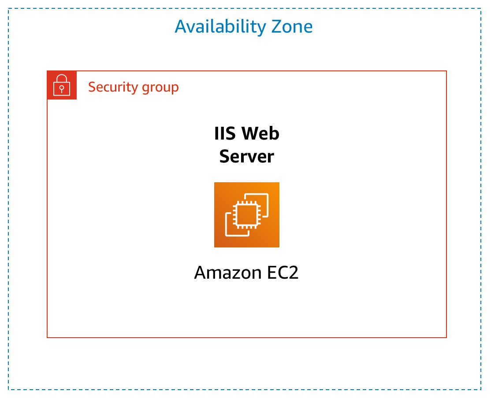

Lab 3: Introduction to Amazon EC2
Version 1.1.7 (spl200)
Overview

This lab provides you with a basic overview of launching, resizing, managing, and monitoring an Amazon EC2 instance.
Amazon Elastic Compute Cloud (Amazon EC2) is a web service that provides resizable compute capacity in the cloud. It is designed to make web-scale cloud computing easier for developers.
Amazon EC2's simple web service interface allows you to obtain and configure capacity with minimal friction. It provides you with complete control of your computing resources and lets you run on Amazon's proven computing environment. Amazon EC2 reduces the time required to obtain and boot new server instances to minutes, allowing you to quickly scale capacity, both up and down, as your computing requirements change.
Amazon EC2 changes the economics of computing by allowing you to pay only for capacity that you actually use. Amazon EC2 provides developers the tools to build failure resilient applications and isolate themselves from common failure scenarios.
Topics covered
By the end of this lab, you will be able to:
- Launch a web server with termination protection enabled
- Monitor Your EC2 instance
- Modify the security group that your web server is using to allow HTTP access
- Resize your Amazon EC2 instance to scale
- Explore EC2 limits
- Test termination protection
- Terminate your EC2 instance
Duration
This lab takes approximately 35 minutes to complete.
Accessing the AWS Management Console
At the top of these instructions, choose Start Lab to launch your lab.
A Start Lab panel opens displaying the lab status.
Wait until you see the message "Lab status: ready", then choose the X to close the Start Lab panel.
At the top of these instructions, choose AWS
This will open the AWS Management Console in a new browser tab. The system will automatically log you in.
Tip: If a new browser tab does not open, there will typically be a banner or icon at the top of your browser indicating that your browser is preventing the site from opening pop-up windows. Choose on the banner or icon and choose "Allow pop ups."
Arrange the AWS Management Console tab so that it displays along side these instructions. Ideally, you will be able to see both browser tabs at the same time, to make it easier to follow the lab steps.
Task 1: Launch Your Amazon EC2 Instance
In this task, you will launch an Amazon EC2 instance with termination protection. Termination protection prevents you from accidentally terminating an EC2 instance. You will deploy your instance with a User Data script that will allow you to deploy a simple web server.
In the AWS Management Console on the Services menu, choose EC2.
Note: Verify that your EC2 console is currently managing resources in the N. Virginia (us-east-1) region. You can verify this by looking at the drop down menu at the top of the screen, to the left of your username. If it does not already indicate N. Virginia, choose the N. Virginia region from the region menu before proceeding to the next step.
Choose Launch instance , then select Launch Instance
Step 1: Choose an Amazon Machine Image (AMI)
An Amazon Machine Image (AMI) provides the information required to launch an instance, which is a virtual server in the cloud. An AMI includes:
- A template for the root volume for the instance (for example, an operating system or an application server with applications)
- Launch permissions that control which AWS accounts can use the AMI to launch instances
- A block device mapping that specifies the volumes to attach to the instance when it is launched
The Quick Start list contains the most commonly-used AMIs. You can also create your own AMI or select an AMI from the AWS Marketplace, an online store where you can sell or buy software that runs on AWS.
- Choose Select next to Amazon Linux 2 AMI (at the top of the list).
Step 2: Choose an Instance Type
Amazon EC2 provides a wide selection of instance types optimized to fit different use cases. Instance types comprise varying combinations of CPU, memory, storage, and networking capacity and give you the flexibility to choose the appropriate mix of resources for your applications. Each instance type includes one or more instance sizes, allowing you to scale your resources to the requirements of your target workload.
You will use a t2.micro instance which should be selected by default. This instance type has 1 virtual CPU and 1 GiB of memory. NOTE: You may be restricted from using other instance types in this lab.
- Choose Next: Configure Instance Details
Step 3: Configure Instance Details
This page is used to configure the instance to suit your requirements. This includes networking and monitoring settings.
The Network indicates which Virtual Private Cloud (VPC) you wish to launch the instance into. You can have multiple networks, such as different ones for development, testing and production.
For Network, select Lab VPC.
The Lab VPC was created using an AWS CloudFormation template during the setup process of your lab. This VPC includes two public subnets in two different Availability Zones.
For Enable termination protection, select Protect against accidental termination.
When an Amazon EC2 instance is no longer required, it can be terminated, which means that the instance is stopped and its resources are released. A terminated instance cannot be started again. If you want to prevent the instance from being accidentally terminated, you can enable termination protection for the instance, which prevents it from being terminated.
- Scroll down, then expand Advanced Details.
A field for User data will appear.
When you launch an instance, you can pass user data to the instance that can be used to perform common automated configuration tasks and even run scripts after the instance starts.
Your instance is running Amazon Linux, so you will provide a shell script that will run when the instance starts.
Copy the following commands and paste them into the User data field:
#!/bin/bashyum -y install httpdsystemctl enable httpdsystemctl start httpdecho '<html><h1>Hello From Your Web Server!</h1></html>' > /var/www/html/index.htmlThe script will:
- Install an Apache web server (httpd)
- Configure the web server to automatically start on boot
- Activate the Web server
- Create a simple web page
- Choose Next: Add Storage
Step 4: Add Storage
Amazon EC2 stores data on a network-attached virtual disk called Elastic Block Store.
You will launch the Amazon EC2 instance using a default 8 GiB disk volume. This will be your root volume (also known as a 'boot' volume).
- Choose Next: Add Tags
Step 5: Add Tags
Tags enable you to categorize your AWS resources in different ways, for example, by purpose, owner, or environment. This is useful when you have many resources of the same type — you can quickly identify a specific resource based on the tags you have assigned to it. Each tag consists of a Key and a Value, both of which you define.
Choose Add Tag then configure:
- Key:
Name - Value:
Web Server
- Key:
Choose Next: Configure Security Group
Step 6: Configure Security Group
A security group acts as a virtual firewall that controls the traffic for one or more instances. When you launch an instance, you associate one or more security groups with the instance. You add rules to each security group that allow traffic to or from its associated instances. You can modify the rules for a security group at any time; the new rules are automatically applied to all instances that are associated with the security group.
On Step 6: Configure Security Group, configure:
- Security group name:
Web Server security group - Description:
Security group for my web server
In this lab, you will not log into your instance using SSH. Removing SSH access will improve the security of the instance.
- Security group name:
Delete the existing SSH rule.
Choose Review and Launch
Step 7: Review Instance Launch
The Review page displays the configuration for the instance you are about to launch.
- Choose Launch
A Select an existing key pair or create a new key pair window will appear.
Amazon EC2 uses public–key cryptography to encrypt and decrypt login information. To log in to your instance, you must create a key pair, specify the name of the key pair when you launch the instance, and provide the private key when you connect to the instance.
In this lab you will not log into your instance, so you do not require a key pair.
Choose the Choose an existing key pair drop-down and select Proceed without a key pair.
Select I acknowledge that ....
Choose Launch Instances
Your instance will now be launched.
Choose View Instances
The instance will appear in a pending state, which means it is being launched. It will then change to running, which indicates that the instance has started booting. There will be a short time before you can access the instance.
The instance receives a public DNS name that you can use to contact the instance from the Internet.
Your Web Server should be selected. The Description tab displays detailed information about your instance.
To view more information in the Description tab, drag the window divider upwards.
Review the information displayed in the Details tab. It includes information about the instance type, security settings and network settings.
Wait for your instance to display the following:
- Instance State: running
- Status Checks: 2/2 checks passed
Congratulations! You have successfully launched your first Amazon EC2 instance.
Task 2: Monitor Your Instance
Monitoring is an important part of maintaining the reliability, availability, and performance of your Amazon Elastic Compute Cloud (Amazon EC2) instances and your AWS solutions.
Choose the Status Checks tab.
With instance status monitoring, you can quickly determine whether Amazon EC2 has detected any problems that might prevent your instances from running applications. Amazon EC2 performs automated checks on every running EC2 instance to identify hardware and software issues.
Notice that both the System reachability and Instance reachability checks have passed.
Choose the Monitoring tab.
This tab displays Amazon CloudWatch metrics for your instance. Currently, there are not many metrics to display because the instance was recently launched.
You can choose on a graph to see an expanded view.
Amazon EC2 sends metrics to Amazon CloudWatch for your EC2 instances. Basic (five-minute) monitoring is enabled by default. You can enable detailed (one-minute) monitoring.
In the Actions menu, select Monitor and troubleshoot Get system log.
The System Log displays the console output of the instance, which is a valuable tool for problem diagnosis. It is especially useful for troubleshooting kernel problems and service configuration issues that could cause an instance to terminate or become unreachable before its SSH daemon can be started. If you do not see a system log, wait a few minutes and then try again.
Scroll through the output and note that the HTTP package was installed from the user data that you added when you created the instance.

Choose Cancel.
In the Actions menu, select Monitor and troubleshoot Get instance screenshot.
This shows you what your Amazon EC2 instance console would look like if a screen were attached to it.

If you are unable to reach your instance via SSH or RDP, you can capture a screenshot of your instance and view it as an image. This provides visibility as to the status of the instance, and allows for quicker troubleshooting.
Choose Cancel.
Congratulations! You have explored several ways to monitor your instance.
Task 3: Update Your Security Group and Access the Web Server
When you launched the EC2 instance, you provided a script that installed a web server and created a simple web page. In this task, you will access content from the web server.
Choose the Details tab.
Copy the IPv4 Public IP of your instance to your clipboard.
Open a new tab in your web browser, paste the IP address you just copied, then press Enter.
Question: Are you able to access your web server? Why not?
You are not currently able to access your web server because the security group is not permitting inbound traffic on port 80, which is used for HTTP web requests. This is a demonstration of using a security group as a firewall to restrict the network traffic that is allowed in and out of an instance.
To correct this, you will now update the security group to permit web traffic on port 80.
Keep the browser tab open, but return to the EC2 Management Console tab.
In the left navigation pane, choose Security Groups.
Select Web Server security group.
Choose the Inbound rules tab.
The security group currently has no rules.
Choose Edit inboud rules then configure:
- Type: HTTP
- Source: Anywhere-IPv4
- Choose Save rules
Return to the web server tab that you previously opened and refresh the page.
You should see the message Hello From Your Web Server!
Congratulations! You have successfully modified your security group to permit HTTP traffic into your Amazon EC2 Instance.
Task 4: Resize Your Instance: Instance Type and EBS Volume
As your needs change, you might find that your instance is over-utilized (too small) or under-utilized (too large). If so, you can change the instance type. For example, if a t2.micro instance is too small for its workload, you can change it to an m5.medium instance. Similarly, you can change the size of a disk.
Stop Your Instance
Before you can resize an instance, you must stop it.
When you stop an instance, it is shut down. There is no charge for a stopped EC2 instance, but the storage charge for attached Amazon EBS volumes remains.
On the EC2 Management Console, in the left navigation pane, choose Instances.
Web Server should already be selected.
In the Instance State menu, select Stop instance.
Choose Stop
Your instance will perform a normal shutdown and then will stop running.
Wait for the Instance State to display: stopped
Change The Instance Type
In the Actions menu, select Instance Settings Change Instance Type, then configure:
- Instance Type: t2.small
- Choose Apply
When the instance is started again it will be a t2.small, which has twice as much memory as a t2.micro instance. NOTE: You may be restricted from using other instance types in this lab.
Resize the EBS Volume
In the left navigation menu, choose Volumes.
In the Actions menu, select Modify Volume.
The disk volume currently has a size of 8 GiB. You will now increase the size of this disk.
Change the size to:
10NOTE: You may be restricted from creating large Amazon EBS volumes in this lab.Choose Modify
Choose Yes to confirm and increase the size of the volume.
Choose Close
Start the Resized Instance
You will now start the instance again, which will now have more memory and more disk space.
In left navigation pane, choose Instances.
In the Instance State menu, select Start instance.
Choose Start
Congratulations! You have successfully resized your Amazon EC2 Instance. In this task you changed your instance type from t2.micro to t2.small. You also modified your root disk volume from 8 GiB to 10 GiB.
Task 5: Explore EC2 Limits
Amazon EC2 provides different resources that you can use. These resources include images, instances, volumes, and snapshots. When you create an AWS account, there are default limits on these resources on a per-region basis.
In the left navigation pane, choose Limits.
From the drop down list, choose Running instances.
Note that there is a limit on the number of instances that you can launch in this region. When launching an instance, the request must not cause your usage to exceed the current instance limit in that region.
You can request an increase for many of these limits.
Task 6: Test Termination Protection
You can delete your instance when you no longer need it. This is referred to as terminating your instance. You cannot connect to or restart an instance after it has been terminated.
In this task, you will learn how to use termination protection.
In left navigation pane, choose Instances.
In the Instance state menu, select Terminate instance.
Then choose Terminate
Note that there is a message that says: Failed to terminate the instance i-1234567xxx. The instance 'i-1234567xxx' may not be terminated. Modify its 'disableApiTermination' instance attribute and try again.
This is a safeguard to prevent the accidental termination of an instance. If you really want to terminate the instance, you will need to disable the termination protection.
In the Actions menu, select Instance settings Change termination protection.
Remove the check next to Enable.
Choose Save
You can now terminate the instance.
In the Instance state menu, select Terminate instance.
Choose Terminate
Congratulations! You have successfully tested termination protection and terminated your instance.
Lab Complete
Congratulations! You have completed the lab.
Choose End Lab at the top of this page and then choose Yes to confirm that you want to end the lab.
A panel will appear, indicating that "DELETE has been initiated... You may close this message box now."
Choose the X in the top right corner to close the panel.
For feedback, suggestions, or corrections, please email us at: aws-course-feedback@amazon.com
Additional Resources
- Launch Your Instance
- Amazon EC2 Instance Types
- Amazon Machine Images (AMI)
- Amazon EC2 - User Data and Shell Scripts
- Amazon EC2 Root Device Volume
- Tagging Your Amazon EC2 Resources
- Security Groups
- Amazon EC2 Key Pairs
- Status Checks for Your Instances
- Getting Console Output and Rebooting Instances
- Amazon EC2 Metrics and Dimensions
- Resizing Your Instance
- Stop and Start Your Instance
- Amazon EC2 Service Limits
- Terminate Your Instance
- Termination Protection for an Instance